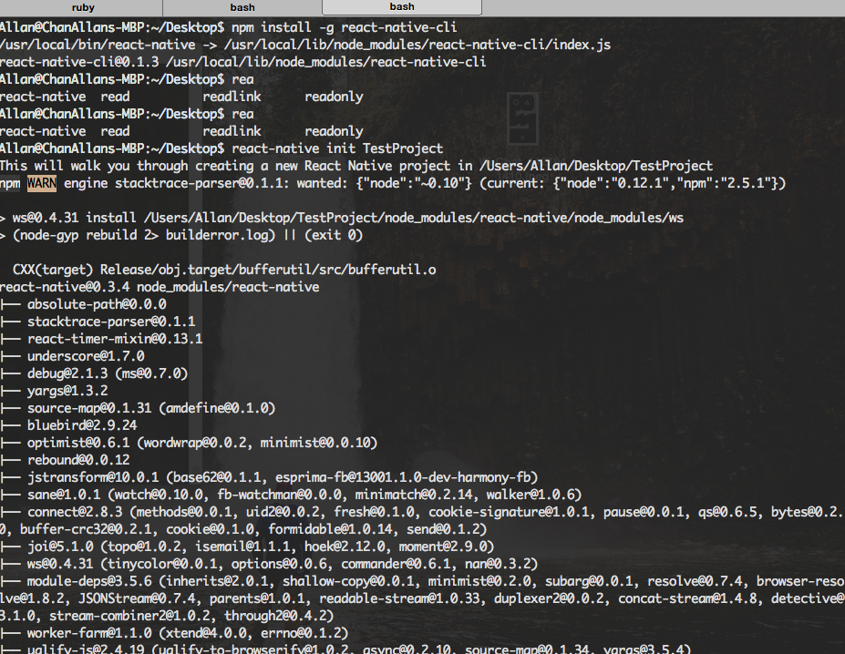
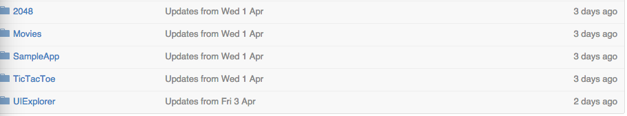
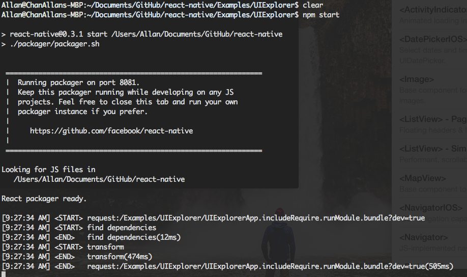
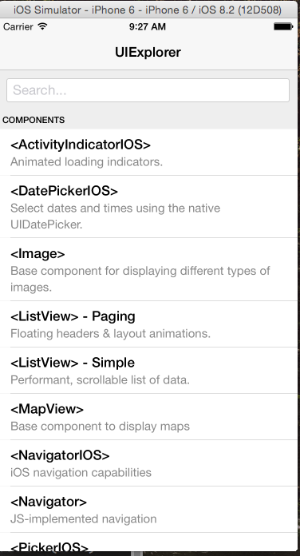

ReacNative 入门
2015-04-06
做过App 开发的程序猿都知道，开发App 最痛苦的不是开发的过程，是编译的过程，调试的过程。
基于这个问题的争论，本人在这里不做太详细的描述。给位可以在Google 一下。
关于React-Native 它是什么，来自于哪里，主要是干点什么，本人在这里也不做详细介绍Google 会给到你想要的答案！！或者点解这里(请自备梯子),而关于React-Native 的好处和坏处，点击这里。
相信如果看完这两篇文章，各位都会多React-Native是什么，或者能做什么都会比较清楚了。下面我会教大家如何去安装React-Native开发环境和如何去运行它官方的Demo，之后在第二篇教程我会教大家如何去做一个简单的APP。
安装：
- 下载Xcode
- 安装Homebrew
- 安装 node (brew install node)
- 安装 watchman (brew install –HEAD watchman)
- 安装 flow (brew install flow)
到这里，你已经成功安装了React-Native 所需要的环境。下面我们来尝试创建一个项目！！
cd 到你项目摆放的目录 然后执行
- npm install -g react-native-cli
- react-native init AwesomeProject
安装成功之后的画面：

至此，你已经成功的安装了所有React-Native所需要的环境和创建了一个React-Native的项目，在Xcode直接Command+R就可以运行你刚刚创建的项目了！！
——————————————————————————————————————————————————————————————————————————————————————————————
在成创建项目之后，很多朋友来问我怎么运行官方的Demo，怎么React-Native的学习成本太TMD高了吧，又会JS又要学OC这不是折腾吗！！！
对于这个问题，我可以保证跟你说这是值得的！！废话不多说，直接上官方的Demo吧！！Demo下载地址,路径是Examples目录下面。在下载项目后，目录结构就会像这样

2048，Movies，SampleApp，TicTacToe 这三个项目都可以直接通过打开Xcode 然后Command+R 直接运行即可，这三个项目简单的展示了React-Native 而UIExplorer则是所有控件的操作。
运行UIExplorer项目：
- 在“终端”下退出你之前在运行的任何项目(直接Command+q)
- 在“终端” cd 到UIExplorer目录下运行 - npm start(如图)
- 启动服务之后，在Xcode上运行(Command+R)(如图) 
到此，你已经学会了如何去安装，创建React-Native的环境和项目了。
总结：很多朋友问，你由始至终都没有对React-Native表态，你会不会用它来做实际的羡慕啊，学这个来由什么用等等的问题。现在我来一一回答。
- 首先我是非常支持React-Native的，我不是一个新技术控，但React-Native确实令我眼前一亮它的思想不是”Write once, run anywhere”而是”Learn once, write anywhere”。
- 基于性能，它是通过IOS上的 JavascriptCore.framework来做OC 跟 JS的绑定，性能上会有一定的保障。
- 基于使用，大家可以想象一下当一个项目组UI方面主要是由React-Native来做的话，服务端和客户端逻辑代码完全独立开得时候，每个人都会得到解放。（真的想想都醉了）